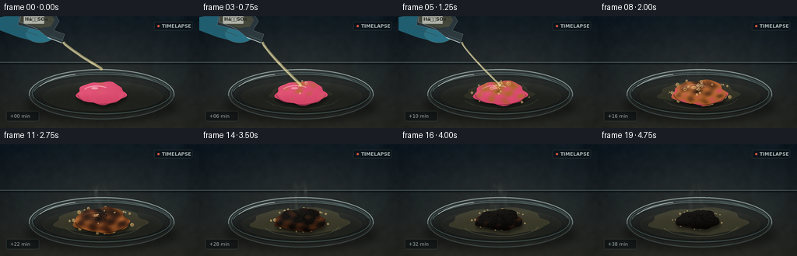
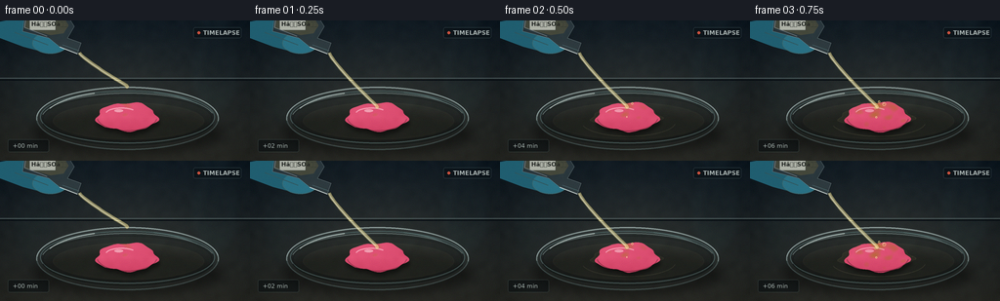

CODING AGENTS AS PIXEL WORLD MODELS
traex/GPT-5.6-Sol · material_0043
点击播放 · 原生 RGB 像素
逐轮保存的候选
回放视频、检查图与代码变化。
每份候选均可单独播放。实际图片检查记录在下方工具轨迹中。
候选 01播放与检查图
点击播放 · 原生 RGB 像素


展开代码变化
--- 上一保存版本
+++ 本次保存版本
@@ -0,0 +1,329 @@
+from pathlib import Path
+import math
+import numpy as np
+from PIL import Image, ImageDraw, ImageFilter, ImageFont
+import artifact_io
+
+W, H, N = 256, 144, 20
+S = 4
+w, h = W*S, H*S
+ROOT = Path(__file__).resolve().parent
+
+try:
+ FONT = ImageFont.truetype('/usr/share/fonts/truetype/dejavu/DejaVuSans.ttf', 6*S)
+ FONT_B = ImageFont.truetype('/usr/share/fonts/truetype/dejavu/DejaVuSans-Bold.ttf', 6*S)
+except Exception:
+ FONT = FONT_B = ImageFont.load_default()
+
+rng = np.random.default_rng(4317)
+# Coherent, low-frequency surface texture.
+small_noise = rng.normal(0, 1, (36, 64)).astype(np.float32)
+noise_img = Image.fromarray(np.uint8(np.clip(128 + small_noise*34, 0, 255))).resize((w,h), Image.Resampling.BICUBIC).filter(ImageFilter.GaussianBlur(2*S))
+NOISE = (np.asarray(noise_img).astype(np.float32)-128)/34
+sensor = rng.normal(0, 0.75, (H,W,3)).astype(np.float32)
+
+def sc(v): return int(round(v*S))
+def box(b): return tuple(sc(v) for v in b)
+def pts(p): return [(sc(x),sc(y)) for x,y in p]
+
+def rgba_layer(): return Image.new('RGBA', (w,h), (0,0,0,0))
+
+def irregular(cx, cy, rx, ry, phase=0.0, n=56, warp=0.0):
+ out=[]
+ for k in range(n):
+ a=2*math.pi*k/n
+ r=1 + 0.055*math.sin(5*a+0.7) + 0.035*math.sin(9*a+phase) + warp*math.sin(3*a-0.8)
+ out.append((cx + rx*r*math.cos(a), cy + ry*r*math.sin(a)))
+ return out
+
+def soft_ellipse(im, b, color, blur):
+ lay=rgba_layer(); d=ImageDraw.Draw(lay); d.ellipse(box(b), fill=color)
+ if blur: lay=lay.filter(ImageFilter.GaussianBlur(sc(blur)))
+ im.alpha_composite(lay)
+
+def draw_background(frame_idx):
+ yy,xx=np.mgrid[0:h,0:w].astype(np.float32)
+ X=xx/S; Y=yy/S
+ # Slate laboratory bench; cool top, warmer pool of light near experiment.
+ base=np.zeros((h,w,3),np.float32)
+ top=np.array([19,29,37],np.float32); bot=np.array([42,43,39],np.float32)
+ v=(Y/H)[...,None]
+ base=top*(1-v)+bot*v
+ glow=np.exp(-(((X-132)/94)**2+((Y-87)/62)**2))*18
+ base += glow[...,None]*np.array([0.65,0.60,0.42])
+ # Horizontal matte bench and faint back-wall light.
+ base += NOISE[...,None]*1.7
+ vign=np.clip(((X-W/2)/(W*.72))**2+((Y-H/2)/(H*.9))**2,0,1)
+ base -= vign[...,None]*13
+ im=Image.fromarray(np.uint8(np.clip(base,0,255)),'RGB').convert('RGBA')
+ # Defocused lab glass in background.
+ bg=rgba_layer(); d=ImageDraw.Draw(bg)
+ d.ellipse(box((194,13,245,97)), fill=(50,85,91,20), outline=(129,182,186,30), width=sc(1))
+ d.rectangle(box((204,0,235,65)), fill=(29,58,65,12), outline=(118,169,177,25), width=sc(1))
+ d.ellipse(box((13,31,57,112)), fill=(34,61,69,16), outline=(102,148,156,22), width=sc(1))
+ bg=bg.filter(ImageFilter.GaussianBlur(sc(4.5)))
+ im.alpha_composite(bg)
+ # horizon and cool strip reflections
+ d=ImageDraw.Draw(im)
+ d.line(pts([(0,59),(256,59)]), fill=(105,124,125,28), width=sc(.5))
+ d.line(pts([(0,61),(256,61)]), fill=(6,12,17,65), width=sc(1))
+ return im
+
+def draw_dish(im):
+ # soft contact shadow
+ soft_ellipse(im,(31,91,229,139),(0,0,0,108),5.5)
+ # glass base body
+ lay=rgba_layer(); d=ImageDraw.Draw(lay)
+ d.ellipse(box((37,68,224,133)), fill=(94,111,108,28), outline=(191,217,215,125), width=sc(1.2))
+ d.ellipse(box((41,72,220,126)), fill=(20,28,28,48), outline=(127,168,168,98), width=sc(1.1))
+ d.ellipse(box((44,77,217,124)), fill=(31,37,34,38), outline=(15,19,18,90), width=sc(.8))
+ # rear and front rim highlights broken into arcs
+ d.arc(box((37,68,224,133)), 184,354, fill=(208,232,228,148), width=sc(1.2))
+ d.arc(box((37,68,224,133)), 5,176, fill=(86,112,112,92), width=sc(1))
+ d.arc(box((42,74,220,128)), 12,169, fill=(16,22,22,155), width=sc(1))
+ d.arc(box((42,74,220,128)), 190,347, fill=(189,219,214,90), width=sc(.9))
+ # glass glints
+ d.arc(box((45,72,215,128)), 201,247, fill=(234,250,244,180), width=sc(1.1))
+ d.arc(box((45,72,215,128)), 289,328, fill=(165,219,218,105), width=sc(.8))
+ im.alpha_composite(lay)
+ # liquid sheen in bottom of dish
+ sheen=rgba_layer(); sd=ImageDraw.Draw(sheen)
+ sd.ellipse(box((54,84,209,122)), fill=(179,170,116,10), outline=(219,216,171,38), width=sc(.6))
+ sheen=sheen.filter(ImageFilter.GaussianBlur(sc(.45)))
+ im.alpha_composite(sheen)
+
+def draw_acid_pool(im, progress):
+ if progress <= 0: return
+ # transparent, slightly amber acid spreads around gum.
+ spread=min(1,progress*1.5)
+ lay=rgba_layer(); d=ImageDraw.Draw(lay)
+ poly=irregular(130,99,33+28*spread,10+7*spread,1.2,60,.045)
+ d.polygon(pts(poly), fill=(205,185,104,int(12+25*spread)))
+ d.line(pts(poly+[poly[0]]), fill=(238,225,159,int(35+30*spread)), width=sc(.55))
+ d.arc(box((83,89,180,119)), 8,165, fill=(249,233,171,int(40+45*spread)), width=sc(.65))
+ im.alpha_composite(lay.filter(ImageFilter.GaussianBlur(sc(.35))))
+
+def gum_mask_and_texture(frame_idx, progress):
+ # Gum swells, buckles, then contracts to porous carbon.
+ if progress < .6:
+ swell=1 + .13*math.sin(progress/.6*math.pi/2)
+ else:
+ swell=1.13 - .24*((progress-.6)/.4)
+ cx=130 + 1.4*math.sin(progress*4)
+ cy=99 - 2.5*max(0, progress-.25)
+ rx=31*swell
+ ry=(14.5*swell)*(1-0.08*max(0,(progress-.72)/.28))
+ poly=irregular(cx,cy,rx,ry,progress*3.4,72,.025+progress*.055)
+ mask=Image.new('L',(w,h),0); md=ImageDraw.Draw(mask); md.polygon(pts(poly),fill=255)
+ # Charring front propagates from acid impact at upper center and through channels.
+ yy,xx=np.mgrid[0:h,0:w].astype(np.float32); X=xx/S; Y=yy/S
+ dist=np.sqrt(((X-131)/37)**2 + ((Y-90)/24)**2)
+ channels=.10*np.sin((X-101)*.34 + np.sin(Y*.19)*2.0)+.07*np.sin(Y*.55-X*.11)
+ q=np.clip(progress*1.48 - dist*.40 + NOISE*.08 + channels,0,1)
+ pink=np.array([219,77,112.],np.float32)
+ amber=np.array([176,101,48.],np.float32)
+ brown=np.array([79,43,24.],np.float32)
+ coal=np.array([17,15,13.],np.float32)
+ arr=np.empty((h,w,3),np.float32)
+ q1=np.clip(q/.30,0,1)[...,None]
+ arr=pink*(1-q1)+amber*q1
+ q2=np.clip((q-.30)/.34,0,1)[...,None]
+ arr=arr*(1-q2)+brown*q2
+ q3=np.clip((q-.64)/.36,0,1)[...,None]
+ arr=arr*(1-q3)+coal*q3
+ # top-left glossy illumination and lower edge shading
+ light=7*np.exp(-(((X-(cx-10))/25)**2+((Y-(cy-8))/13)**2)) - np.clip((Y-cy)/ry,0,1)*12
+ arr += light[...,None]
+ arr += NOISE[...,None]*(3.5-progress*1.2)
+ arr=np.uint8(np.clip(arr,0,255))
+ tex=Image.fromarray(arr,'RGB').convert('RGBA'); tex.putalpha(mask)
+ return mask, tex, poly, (cx,cy,rx,ry)
+
+def draw_foam_behind(im, progress, frame_idx, cx,cy,rx,ry):
+ if progress < .08: return
+ lay=rgba_layer(); d=ImageDraw.Draw(lay)
+ # Stable bubble sites; each grows and some pop in the timelapse.
+ rrng=np.random.default_rng(822)
+ for j in range(31):
+ a=rrng.uniform(0,2*math.pi)
+ radial=rrng.uniform(.84,1.20)
+ x=cx+math.cos(a)*rx*radial
+ y=cy+math.sin(a)*ry*radial*.95
+ born=.06+j%7*.055+rrng.uniform(0,.06)
+ life=np.clip((progress-born)/.16,0,1)
+ if life<=0: continue
+ pop=max(0,(progress-(born+.48))/.18)
+ r=(.75+rrng.uniform(0,2.0))*life*(1-.55*min(pop,1))
+ col=(210,150,73,int(80+85*(1-progress*.4)))
+ d.ellipse(box((x-r,y-r,x+r,y+r)),fill=col,outline=(246,211,139,180),width=max(1,sc(.45)))
+ d.ellipse(box((x-r*.45,y-r*.58,x+r*.05,y-r*.08)),fill=(255,244,203,140))
+ im.alpha_composite(lay)
+
+def draw_gum(im, frame_idx):
+ progress=np.clip((frame_idx-1)/17,0,1)
+ draw_acid_pool(im, progress)
+ mask,tex,poly,geo=gum_mask_and_texture(frame_idx,progress)
+ cx,cy,rx,ry=geo
+ # Gum shadow/depth
+ shadow=rgba_layer(); sd=ImageDraw.Draw(shadow); sd.polygon(pts([(x+1,y+4) for x,y in poly]),fill=(0,0,0,120))
+ im.alpha_composite(shadow.filter(ImageFilter.GaussianBlur(sc(2.0))))
+ draw_foam_behind(im,progress,frame_idx,cx,cy,rx,ry)
+ im.alpha_composite(tex)
+ detail=rgba_layer(); d=ImageDraw.Draw(detail)
+ # Moist original gum highlight disappears as the material chars.
+ if progress < .68:
+ alpha=int(190*(1-progress/.68))
+ d.arc(box((cx-rx*.72,cy-ry*.68,cx+rx*.35,cy+ry*.2)),194,318,fill=(255,184,202,alpha),width=sc(1.3))
+ d.ellipse(box((cx-13,cy-8,cx-4,cy-5)),fill=(255,217,224,int(alpha*.75)))
+ # Cracks develop and branch while carbonizing.
+ crack_amt=np.clip((progress-.23)/.77,0,1)
+ for j in range(11):
+ born=.23+j*.045
+ strength=np.clip((progress-born)/.23,0,1)
+ if strength<=0: continue
+ a=-2.85+j*.54
+ r0=3+j%3; r1=(10+8*(j%4)/3)*strength
+ x0=cx+math.cos(a)*r0; y0=cy+math.sin(a)*r0*.48-2
+ mid=(cx+math.cos(a+.16)*r1*.58,cy+math.sin(a+.16)*r1*.28)
+ end=(cx+math.cos(a)*r1,cy+math.sin(a)*r1*.47)
+ d.line(pts([(x0,y0),mid,end]),fill=(5,6,5,int(70+145*strength)),width=max(sc(.45),sc(.85*strength)))
+ if j%2==0:
+ d.line(pts([mid,(mid[0]+math.cos(a+1.0)*4*strength,mid[1]+math.sin(a+1.0)*2.5*strength)]),fill=(14,10,8,int(110*strength)),width=sc(.45))
+ # Pores in the final carbon mass.
+ if progress>.48:
+ rrng=np.random.default_rng(991)
+ for j in range(25):
+ x=cx+rrng.uniform(-.75,.75)*rx; y=cy+rrng.uniform(-.58,.58)*ry
+ if ((x-cx)/rx)**2+((y-cy)/ry)**2>0.82: continue
+ born=.48+(j%8)*.045
+ a=np.clip((progress-born)/.2,0,1)
+ if a<=0: continue
+ r=rrng.uniform(.45,1.45)*a
+ d.ellipse(box((x-r,y-r*.72,x+r,y+r*.72)),fill=(2,3,3,int(125+100*a)),outline=(82,63,42,int(55*a)),width=sc(.35))
+ # Contact fizz on top surface.
+ rrng=np.random.default_rng(225)
+ for j in range(18):
+ born=.03+(j%6)*.045
+ end=.44+(j%5)*.055
+ if not (born < progress < end): continue
+ phase=(progress-born)/(end-born)
+ x=131+rrng.normal(0,9)*(0.25+phase); y=90+rrng.normal(0,4)+phase*3
+ r=rrng.uniform(.55,1.55)*(0.5+math.sin(phase*math.pi))
+ d.ellipse(box((x-r,y-r,x+r,y+r)),fill=(195,141,62,80),outline=(255,222,157,200),width=sc(.45))
+ d.ellipse(box((x-r*.45,y-r*.55,x-r*.05,y-r*.15)),fill=(255,249,212,180))
+ # Contour at the lower edge gives thickness.
+ d.arc(box((cx-rx,cy-ry,cx+rx,cy+ry)),8,171,fill=(8,7,6,int(70+110*progress)),width=sc(.9))
+ im.alpha_composite(detail)
+ return progress, geo
+
+def draw_vapor(im, progress, frame_idx):
+ if progress < .16: return
+ amount=np.clip((progress-.16)/.45,0,1)*(1-.25*max(0,(progress-.78)/.22))
+ lay=rgba_layer(); d=ImageDraw.Draw(lay)
+ # Coherent wisps drift upward between timelapse samples.
+ for j in range(7):
+ birth=.12+j*.055
+ if progress<birth: continue
+ phase=(progress-birth)*8.5+j*.81
+ x0=116+j*4.1
+ y0=88-j%2
+ path=[]
+ length=12+amount*23+(j%3)*4
+ for k in range(18):
+ q=k/17
+ x=x0+math.sin(phase+q*5.0+j)*2.3+q*math.sin(j*2.1+progress*7)*5
+ y=y0-q*length
+ path.append((x,y))
+ alpha=int((28+34*(j%2))*amount)
+ d.line(pts(path),fill=(220,224,207,alpha),width=sc(1.4+(.5 if j%3==0 else 0)))
+ lay=lay.filter(ImageFilter.GaussianBlur(sc(2.0)))
+ im.alpha_composite(lay)
+ # crisp inner vapor cores
+ core=rgba_layer(); cd=ImageDraw.Draw(core)
+ for j in range(3):
+ x=124+j*6+math.sin(progress*9+j)*2
+ cd.arc(box((x-8,55-j*4,x+8,91)),100,258,fill=(228,230,208,int(35*amount)),width=sc(.75))
+ im.alpha_composite(core.filter(ImageFilter.GaussianBlur(sc(.6))))
+
+def draw_pourer(im, frame_idx):
+ # Present during the actual pour; then retreats from view.
+ if frame_idx>7: return
+ retreat=max(0,frame_idx-5)*5
+ dx=-retreat; dy=-retreat*.55
+ lay=rgba_layer(); d=ImageDraw.Draw(lay)
+ # nitrile-gloved fingers behind flask
+ d.polygon(pts([(0+dx,1+dy),(30+dx,-4+dy),(58+dx,8+dy),(68+dx,25+dy),(51+dx,34+dy),(24+dx,27+dy),(0+dx,18+dy)]),fill=(32,94,112,255))
+ d.ellipse(box((33+dx,12+dy,70+dx,34+dy)),fill=(42,112,132,255),outline=(90,170,182,140),width=sc(.7))
+ d.line(pts([(15+dx,12+dy),(49+dx,25+dy)]),fill=(86,162,173,115),width=sc(1.1))
+ # glass reagent bottle shoulder and narrow pouring neck, diagonally right
+ body=[(26+dx,-10+dy),(67+dx,-8+dy),(76+dx,6+dy),(69+dx,18+dy),(83+dx,23+dy),(79+dx,34+dy),(61+dx,27+dy),(50+dx,18+dy),(23+dx,11+dy)]
+ d.polygon(pts(body),fill=(181,215,216,38),outline=(214,239,238,158))
+ # acid volume visible through glass
+ d.polygon(pts([(28+dx,-5+dy),(65+dx,-4+dy),(70+dx,5+dy),(65+dx,13+dy),(52+dx,15+dy),(25+dx,8+dy)]),fill=(229,216,144,62))
+ d.line(pts([(61+dx,27+dy),(79+dx,34+dy)]),fill=(239,251,247,205),width=sc(1.1))
+ d.line(pts([(64+dx,25+dy),(81+dx,31+dy)]),fill=(95,134,137,170),width=sc(.7))
+ # small chemical label, legible cue
+ d.rounded_rectangle(box((30+dx,-2+dy,57+dx,10+dy)),radius=sc(1),fill=(229,231,214,190),outline=(116,120,105,150),width=sc(.5))
+ d.text((sc(32+dx),sc(0+dy)), 'HâSOâ',font=FONT_B,fill=(36,39,35,235),stroke_width=0)
+ # glass glints
+ d.line(pts([(27+dx,-6+dy),(25+dx,7+dy),(48+dx,16+dy)]),fill=(246,255,255,120),width=sc(.8))
+ im.alpha_composite(lay)
+ # Acid stream / droplets. Start above target on frame 0; contact from frame 1.
+ stream=rgba_layer(); sd=ImageDraw.Draw(stream)
+ sx,sy=81+dx,33+dy
+ if frame_idx<=5:
+ endy=67 if frame_idx==0 else 88
+ path=[]
+ for k in range(16):
+ q=k/15
+ y=sy+(endy-sy)*q
+ x=sx+(130-sx)*(q**1.25)+math.sin(q*math.pi)*1.0
+ path.append((x,y))
+ width=3.8 if frame_idx<5 else 2.6
+ sd.line(pts(path),fill=(229,216,145,150),width=sc(width))
+ sd.line(pts([(x-.6,y) for x,y in path]),fill=(255,250,217,205),width=sc(.85))
+ sd.ellipse(box((path[-1][0]-2,path[-1][1]-1.2,path[-1][0]+2,path[-1][1]+2.8)),fill=(245,228,155,150))
+ elif frame_idx in (6,7):
+ # Last drops after pouring stops.
+ for k in range(2 if frame_idx==6 else 1):
+ y=50+frame_idx*4+k*14
+ x=97+(y-50)*.55
+ r=1.8-k*.3
+ sd.ellipse(box((x-r,y-r*1.4,x+r,y+r*1.4)),fill=(246,232,169,175),outline=(255,255,231,180),width=sc(.35))
+ im.alpha_composite(stream.filter(ImageFilter.GaussianBlur(sc(.18))))
+
+def finishing(im, frame_idx, progress):
+ # Cool highlight and restrained timelapse HUD cue.
+ lay=rgba_layer(); d=ImageDraw.Draw(lay)
+ d.rounded_rectangle(box((198,7,247,18)),radius=sc(2),fill=(6,12,16,112),outline=(124,159,159,70),width=sc(.5))
+ d.ellipse(box((202,11,205,14)),fill=(230,91,67,225))
+ d.text((sc(208),sc(9)), 'TIMELAPSE',font=FONT_B,fill=(211,222,218,205))
+ # elapsed compressed laboratory time, makes temporal process explicit
+ mins=frame_idx*2
+ stamp=f'+{mins:02d} min'
+ d.rounded_rectangle(box((8,122,50,135)),radius=sc(2),fill=(4,9,12,120),outline=(113,145,145,58),width=sc(.5))
+ d.text((sc(13),sc(125)),stamp,font=FONT,fill=(198,214,210,210))
+ im.alpha_composite(lay)
+ # downsample and add slight stable sensor texture
+ rgb=im.convert('RGB').resize((W,H),Image.Resampling.LANCZOS)
+ arr=np.asarray(rgb).astype(np.float32)
+ # Tiny varying sensor noise without destroying temporal consistency.
+ vrng=np.random.default_rng(9000+frame_idx)
+ arr += sensor + vrng.normal(0,.23,(H,W,1))
+ return np.uint8(np.clip(arr,0,255))
+
+def render(i):
+ im=draw_background(i)
+ draw_dish(im)
+ progress,geo=draw_gum(im,i)
+ draw_vapor(im,progress,i)
+ draw_pourer(im,i)
+ return finishing(im,i,progress)
+
+def main():
+ frames=np.stack([render(i) for i in range(N)],axis=0)
+ artifact_io.save(frames,ROOT)
+ print('saved',frames.shape,frames.dtype,'to',ROOT)
+
+if __name__=='__main__':
+ main()
候选 02播放与检查图
点击播放 · 原生 RGB 像素
展开代码变化
--- 上一保存版本
+++ 本次保存版本
@@ -264,7 +264,7 @@
d.line(pts([(64+dx,25+dy),(81+dx,31+dy)]),fill=(95,134,137,170),width=sc(.7))
# small chemical label, legible cue
d.rounded_rectangle(box((30+dx,-2+dy,57+dx,10+dy)),radius=sc(1),fill=(229,231,214,190),outline=(116,120,105,150),width=sc(.5))
- d.text((sc(32+dx),sc(0+dy)), 'HâSOâ',font=FONT_B,fill=(36,39,35,235),stroke_width=0)
+ d.text((sc(32+dx),sc(0+dy)), 'H2SO4',font=FONT_B,fill=(36,39,35,235),stroke_width=0)
# glass glints
d.line(pts([(27+dx,-6+dy),(25+dx,7+dy),(48+dx,16+dy)]),fill=(246,255,255,120),width=sc(.8))
im.alpha_composite(lay)
可观测工具轨迹
实际执行的命令与返回图片。
命令 1exit 0
/bin/bash -lc "cat prompt.txt && printf '\\n--- GENERATION_RULES ---\\n' && cat GENERATION_RULES.md && printf '\\n--- TASK_SPEC ---\\n' && cat task_spec.json"
命令 2exit 0
/bin/bash -lc "find . -maxdepth 2 -type f -printf '%p %s bytes\\n' | sort && printf '\\nTOOLS\\n' && command -v ffmpeg || true && command -v python3 || true && command -v blender || true && command -v convert || true"
命令 3exit 0
/bin/bash -lc 'cat artifact_io.py'
命令 4exit 0
/bin/bash -lc "cat > generate.py <<'PY'
from pathlib import Path
import math
import numpy as np
from PIL import Image, ImageDraw, ImageFilter, ImageFont
import artifact_io
W, H, N = 256, 144, 20
S = 4
w, h = W*S, H*S
ROOT = Path(__file__).resolve().parent
try:
FONT = ImageFont.truetype('/usr/share/fonts/truetype/dejavu/DejaVuSans.ttf', 6*S)
FONT_B = ImageFont.truetype('/usr/share/fonts/truetype/dejavu/DejaVuSans-Bold.ttf', 6*S)
except Exception:
FONT = FONT_B = ImageFont.load_default()
rng = np.random.default_rng(4317)
# Coherent, low-frequency surface texture.
small_noise = rng.normal(0, 1, (36, 64)).astype(np.float32)
noise_img = Image.fromarray(np.uint8(np.clip(128 + small_noise*34, 0, 255))).resize((w,h), Image.Resampling.BICUBIC).filter(ImageFilter.GaussianBlur(2*S))
NOISE = (np.asarray(noise_img).astype(np.float32)-128)/34
sensor = rng.normal(0, 0.75, (H,W,3)).astype(np.float32)
def sc(v): return int(round(v*S))
def box(b): return tuple(sc(v) for v in b)
def pts(p): return [(sc(x),sc(y)) for x,y in p]
def rgba_layer(): return Image.new('RGBA', (w,h), (0,0,0,0))
def irregular(cx, cy, rx, ry, phase=0.0, n=56, warp=0.0):
out=[]
for k in range(n):
a=2*math.pi*k/n
r=1 + 0.055*math.sin(5*a+0.7) + 0.035*math.sin(9*a+phase) + warp*math.sin(3*a-0.8)
out.append((cx + rx*r*math.cos(a), cy + ry*r*math.sin(a)))
return out
def soft_ellipse(im, b, color, blur):
lay=rgba_layer(); d=ImageDraw.Draw(lay); d.ellipse(box(b), fill=color)
if blur: lay=lay.filter(ImageFilter.GaussianBlur(sc(blur)))
im.alpha_composite(lay)
def draw_background(frame_idx):
yy,xx=np.mgrid[0:h,0:w].astype(np.float32)
X=xx/S; Y=yy/S
# Slate laboratory bench; cool top, warmer pool of light near experiment.
base=np.zeros((h,w,3),np.float32)
top=np.array([19,29,37],np.float32); bot=np.array([42,43,39],np.float32)
v=(Y/H)[...,None]
base=top*(1-v)+bot*v
glow=np.exp(-(((X-132)/94)**2+((Y-87)/62)**2))*18
base += glow[...,None]*np.array([0.65,0.60,0.42])
# Horizontal matte bench and faint back-wall light.
base += NOISE[...,None]*1.7
vign=np.clip(((X-W/2)/(W*.72))**2+((Y-H/2)/(H*.9))**2,0,1)
base -= vign[...,None]*13
im=Image.fromarray(np.uint8(np.clip(base,0,255)),'RGB').convert('RGBA')
# Defocused lab glass in background.
bg=rgba_layer(); d=ImageDraw.Draw(bg)
d.ellipse(box((194,13,245,97)), fill=(50,85,91,20), outline=(129,182,186,30), width=sc(1))
d.rectangle(box((204,0,235,65)), fill=(29,58,65,12), outline=(118,169,177,25), width=sc(1))
d.ellipse(box((13,31,57,112)), fill=(34,61,69,16), outline=(102,148,156,22), width=sc(1))
bg=bg.filter(ImageFilter.GaussianBlur(sc(4.5)))
im.alpha_composite(bg)
# horizon and cool strip reflections
d=ImageDraw.Draw(im)
d.line(pts([(0,59),(256,59)]), fill=(105,124,125,28), width=sc(.5))
d.line(pts([(0,61),(256,61)]), fill=(6,12,17,65), width=sc(1))
return im
def draw_dish(im):
# soft contact shadow
soft_ellipse(im,(31,91,229,139),(0,0,0,108),5.5)
# glass base body
lay=rgba_layer(); d=ImageDraw.Draw(lay)
d.ellipse(box((37,68,224,133)), fill=(94,111,108,28), outline=(191,217,215,125), width=sc(1.2))
d.ellipse(box((41,72,220,126)), fill=(20,28,28,48), outline=(127,168,168,98), width=sc(1.1))
d.ellipse(box((44,77,217,124)), fill=(31,37,34,38), outline=(15,19,18,90), width=sc(.8))
# rear and front rim highlights broken into arcs
d.arc(box((37,68,224,133)), 184,354, fill=(208,232,228,148), width=sc(1.2))
d.arc(box((37,68,224,133)), 5,176, fill=(86,112,112,92), width=sc(1))
d.arc(box((42,74,220,128)), 12,169, fill=(16,22,22,155), width=sc(1))
d.arc(box((42,74,220,128)), 190,347, fill=(189,219,214,90), width=sc(.9))
# glass glints
d.arc(box((45,72,215,128)), 201,247, fill=(234,250,244,180), width=sc(1.1))
d.arc(box((45,72,215,128)), 289,328, fill=(165,219,218,105), width=sc(.8))
im.alpha_composite(lay)
# liquid sheen in bottom of dish
sheen=rgba_layer(); sd=ImageDraw.Draw(sheen)
sd.ellipse(box((54,84,209,122)), fill=(179,170,116,10), outline=(219,216,171,38), width=sc(.6))
sheen=sheen.filter(ImageFilter.GaussianBlur(sc(.45)))
im.alpha_composite(sheen)
def draw_acid_pool(im, progress):
if progress <= 0: return
# transparent, slightly amber acid spreads around gum.
spread=min(1,progress*1.5)
lay=rgba_layer(); d=ImageDraw.Draw(lay)
poly=irregular(130,99,33+28*spread,10+7*spread,1.2,60,.045)
d.polygon(pts(poly), fill=(205,185,104,int(12+25*spread)))
d.line(pts(poly+[poly[0]]), fill=(238,225,159,int(35+30*spread)), width=sc(.55))
d.arc(box((83,89,180,119)), 8,165, fill=(249,233,171,int(40+45*spread)), width=sc(.65))
im.alpha_composite(lay.filter(ImageFilter.GaussianBlur(sc(.35))))
def gum_mask_and_texture(frame_idx, progress):
# Gum swells, buckles, then contracts to porous carbon.
if progress < .6:
swell=1 + .13*math.sin(progress/.6*math.pi/2)
else:
swell=1.13 - .24*((progress-.6)/.4)
cx=130 + 1.4*math.sin(progress*4)
cy=99 - 2.5*max(0, progress-.25)
rx=31*swell
ry=(14.5*swell)*(1-0.08*max(0,(progress-.72)/.28))
poly=irregular(cx,cy,rx,ry,progress*3.4,72,.025+progress*.055)
mask=Image.new('L',(w,h),0); md=ImageDraw.Draw(mask); md.polygon(pts(poly),fill=255)
# Charring front propagates from acid impact at upper center and through channels.
yy,xx=np.mgrid[0:h,0:w].astype(np.float32); X=xx/S; Y=yy/S
dist=np.sqrt(((X-131)/37)**2 + ((Y-90)/24)**2)
channels=.10*np.sin((X-101)*.34 + np.sin(Y*.19)*2.0)+.07*np.sin(Y*.55-X*.11)
q=np.clip(progress*1.48 - dist*.40 + NOISE*.08 + channels,0,1)
pink=np.array([219,77,112.],np.float32)
amber=np.array([176,101,48.],np.float32)
brown=np.array([79,43,24.],np.float32)
coal=np.array([17,15,13.],np.float32)
arr=np.empty((h,w,3),np.float32)
q1=np.clip(q/.30,0,1)[...,None]
arr=pink*(1-q1)+amber*q1
q2=np.clip((q-.30)/.34,0,1)[...,None]
arr=arr*(1-q2)+brown*q2
q3=np.clip((q-.64)/.36,0,1)[...,None]
arr=arr*(1-q3)+coal*q3
# top-left glossy illumination and lower edge shading
light=7*np.exp(-(((X-(cx-10))/25)**2+((Y-(cy-8))/13)**2)) - np.clip((Y-cy)/ry,0,1)*12
arr += light[...,None]
arr += NOISE[...,None]*(3.5-progress*1.2)
arr=np.uint8(np.clip(arr,0,255))
tex=Image.fromarray(arr,'RGB').convert('RGBA'); tex.putalpha(mask)
return mask, tex, poly, (cx,cy,rx,ry)
def draw_foam_behind(im, progress, frame_idx, cx,cy,rx,ry):
if progress < .08: return
lay=rgba_layer(); d=ImageDraw.Draw(lay)
# Stable bubble sites; each grows and some pop in the timelapse.
rrng=np.random.default_rng(822)
for j in range(31):
a=rrng.uniform(0,2*math.pi)
radial=rrng.uniform(.84,1.20)
x=cx+math.cos(a)*rx*radial
y=cy+math.sin(a)*ry*radial*.95
born=.06+j%7*.055+rrng.uniform(0,.06)
life=np.clip((progress-born)/.16,0,1)
if life<=0: continue
pop=max(0,(progress-(born+.48))/.18)
r=(.75+rrng.uniform(0,2.0))*life*(1-.55*min(pop,1))
col=(210,150,73,int(80+85*(1-progress*.4)))
d.ellipse(box((x-r,y-r,x+r,y+r)),fill=col,outline=(246,211,139,180),width=max(1,sc(.45)))
d.ellipse(box((x-r*.45,y-r*.58,x+r*.05,y-r*.08)),fill=(255,244,203,140))
im.alpha_composite(lay)
def draw_gum(im, frame_idx):
progress=np.clip((frame_idx-1)/17,0,1)
draw_acid_pool(im, progress)
mask,tex,poly,geo=gum_mask_and_texture(frame_idx,progress)
cx,cy,rx,ry=geo
# Gum shadow/depth
shadow=rgba_layer(); sd=ImageDraw.Draw(shadow); sd.polygon(pts([(x+1,y+4) for x,y in poly]),fill=(0,0,0,120))
im.alpha_composite(shadow.filter(ImageFilter.GaussianBlur(sc(2.0))))
draw_foam_behind(im,progress,frame_idx,cx,cy,rx,ry)
im.alpha_composite(tex)
detail=rgba_layer(); d=ImageDraw.Draw(detail)
# Moist original gum highlight disappears as the material chars.
if progress < .68:
alpha=int(190*(1-progress/.68))
d.arc(box((cx-rx*.72,cy-ry*.68,cx+rx*.35,cy+ry*.2)),194,318,fill=(255,184,202,alpha),width=sc(1.3))
d.ellipse(box((cx-13,cy-8,cx-4,cy-5)),fill=(255,217,224,int(alpha*.75)))
# Cracks develop and branch while carbonizing.
crack_amt=np.clip((progress-.23)/.77,0,1)
for j in range(11):
born=.23+j*.045
strength=np.clip((progress-born)/.23,0,1)
if strength<=0: continue
a=-2.85+j*.54
r0=3+j%3; r1=(10+8*(j%4)/3)*strength
x0=cx+math.cos(a)*r0; y0=cy+math.sin(a)*r0*.48-2
mid=(cx+math.cos(a+.16)*r1*.58,cy+math.sin(a+.16)*r1*.28)
end=(cx+math.cos(a)*r1,cy+math.sin(a)*r1*.47)
d.line(pts([(x0,y0),mid,end]),fill=(5,6,5,int(70+145*strength)),width=max(sc(.45),sc(.85*strength)))
if j%2==0:
d.line(pts([mid,(mid[0]+math.cos(a+1.0)*4*strength,mid[1]+math.sin(a+1.0)*2.5*strength)]),fill=(14,10,8,int(110*strength)),width=sc(.45))
# Pores in the final carbon mass.
if progress>.48:
rrng=np.random.default_rng(991)
for j in range(25):
x=cx+rrng.uniform(-.75,.75)*rx; y=cy+rrng.uniform(-.58,.58)*ry
if ((x-cx)/rx)**2+((y-cy)/ry)**2>0.82: continue
born=.48+(j%8)*.045
a=np.clip((progress-born)/.2,0,1)
if a<=0: continue
r=rrng.uniform(.45,1.45)*a
d.ellipse(box((x-r,y-r*.72,x+r,y+r*.72)),fill=(2,3,3,int(125+100*a)),outline=(82,63,42,int(55*a)),width=sc(.35))
# Contact fizz on top surface.
rrng=np.random.default_rng(225)
for j in range(18):
born=.03+(j%6)*.045
end=.44+(j%5)*.055
if not (born < progress < end): continue
phase=(progress-born)/(end-born)
x=131+rrng.normal(0,9)*(0.25+phase); y=90+rrng.normal(0,4)+phase*3
r=rrng.uniform(.55,1.55)*(0.5+math.sin(phase*math.pi))
d.ellipse(box((x-r,y-r,x+r,y+r)),fill=(195,141,62,80),outline=(255,222,157,200),width=sc(.45))
d.ellipse(box((x-r*.45,y-r*.55,x-r*.05,y-r*.15)),fill=(255,249,212,180))
# Contour at the lower edge gives thickness.
d.arc(box((cx-rx,cy-ry,cx+rx,cy+ry)),8,171,fill=(8,7,6,int(70+110*progress)),width=sc(.9))
im.alpha_composite(detail)
return progress, geo
def draw_vapor(im, progress, frame_idx):
if progress < .16: return
amount=np.clip((progress-.16)/.45,0,1)*(1-.25*max(0,(progress-.78)/.22))
lay=rgba_layer(); d=ImageDraw.Draw(lay)
# Coherent wisps drift upward between timelapse samples.
for j in range(7):
birth=.12+j*.055
if progress<birth: continue
phase=(progress-birth)*8.5+j*.81
x0=116+j*4.1
y0=88-j%2
path=[]
length=12+amount*23+(j%3)*4
for k in range(18):
q=k/17
x=x0+math.sin(phase+q*5.0+j)*2.3+q*math.sin(j*2.1+progress*7)*5
y=y0-q*length
path.append((x,y))
alpha=int((28+34*(j%2))*amount)
d.line(pts(path),fill=(220,224,207,alpha),width=sc(1.4+(.5 if j%3==0 else 0)))
lay=lay.filter(ImageFilter.GaussianBlur(sc(2.0)))
im.alpha_composite(lay)
# crisp inner vapor cores
core=rgba_layer(); cd=ImageDraw.Draw(core)
for j in range(3):
x=124+j*6+math.sin(progress*9+j)*2
cd.arc(box((x-8,55-j*4,x+8,91)),100,258,fill=(228,230,208,int(35*amount)),width=sc(.75))
im.alpha_composite(core.filter(ImageFilter.GaussianBlur(sc(.6))))
def draw_pourer(im, frame_idx):
# Present during the actual pour; then retreats from view.
if frame_idx>7: return
retreat=max(0,frame_idx-5)*5
dx=-retreat; dy=-retreat*.55
lay=rgba_layer(); d=ImageDraw.Draw(lay)
# nitrile-gloved fingers behind flask
d.polygon(pts([(0+dx,1+dy),(30+dx,-4+dy),(58+dx,8+dy),(68+dx,25+dy),(51+dx,34+dy),(24+dx,27+dy),(0+dx,18+dy)]),fill=(32,94,112,255))
d.ellipse(box((33+dx,12+dy,70+dx,34+dy)),fill=(42,112,132,255),outline=(90,170,182,140),width=sc(.7))
d.line(pts([(15+dx,12+dy),(49+dx,25+dy)]),fill=(86,162,173,115),width=sc(1.1))
# glass reagent bottle shoulder and narrow pouring neck, diagonally right
body=[(26+dx,-10+dy),(67+dx,-8+dy),(76+dx,6+dy),(69+dx,18+dy),(83+dx,23+dy),(79+dx,34+dy),(61+dx,27+dy),(50+dx,18+dy),(23+dx,11+dy)]
d.polygon(pts(body),fill=(181,215,216,38),outline=(214,239,238,158))
# acid volume visible through glass
d.polygon(pts([(28+dx,-5+dy),(65+dx,-4+dy),(70+dx,5+dy),(65+dx,13+dy),(52+dx,15+dy),(25+dx,8+dy)]),fill=(229,216,144,62))
d.line(pts([(61+dx,27+dy),(79+dx,34+dy)]),fill=(239,251,247,205),width=sc(1.1))
d.line(pts([(64+dx,25+dy),(81+dx,31+dy)]),fill=(95,134,137,170),width=sc(.7))
# small chemical label, legible cue
d.rounded_rectangle(box((30+dx,-2+dy,57+dx,10+dy)),radius=sc(1),fill=(229,231,214,190),outline=(116,120,105,150),width=sc(.5))
d.text((sc(32+dx),sc(0+dy)), 'HâSOâ',font=FONT_B,fill=(36,39,35,235),stroke_width=0)
# glass glints
d.line(pts([(27+dx,-6+dy),(25+dx,7+dy),(48+dx,16+dy)]),fill=(246,255,255,120),width=sc(.8))
im.alpha_composite(lay)
# Acid stream / droplets. Start above target on frame 0; contact from frame 1.
stream=rgba_layer(); sd=ImageDraw.Draw(stream)
sx,sy=81+dx,33+dy
if frame_idx<=5:
endy=67 if frame_idx==0 else 88
path=[]
for k in range(16):
q=k/15
y=sy+(endy-sy)*q
x=sx+(130-sx)*(q**1.25)+math.sin(q*math.pi)*1.0
path.append((x,y))
width=3.8 if frame_idx<5 else 2.6
sd.line(pts(path),fill=(229,216,145,150),width=sc(width))
sd.line(pts([(x-.6,y) for x,y in path]),fill=(255,250,217,205),width=sc(.85))
sd.ellipse(box((path[-1][0]-2,path[-1][1]-1.2,path[-1][0]+2,path[-1][1]+2.8)),fill=(245,228,155,150))
elif frame_idx in (6,7):
# Last drops after pouring stops.
for k in range(2 if frame_idx==6 else 1):
y=50+frame_idx*4+k*14
x=97+(y-50)*.55
r=1.8-k*.3
sd.ellipse(box((x-r,y-r*1.4,x+r,y+r*1.4)),fill=(246,232,169,175),outline=(255,255,231,180),width=sc(.35))
im.alpha_composite(stream.filter(ImageFilter.GaussianBlur(sc(.18))))
def finishing(im, frame_idx, progress):
# Cool highlight and restrained timelapse HUD cue.
lay=rgba_layer(); d=ImageDraw.Draw(lay)
d.rounded_rectangle(box((198,7,247,18)),radius=sc(2),fill=(6,12,16,112),outline=(124,159,159,70),width=sc(.5))
d.ellipse(box((202,11,205,14)),fill=(230,91,67,225))
d.text((sc(208),sc(9)), 'TIMELAPSE',font=FONT_B,fill=(211,222,218,205))
# elapsed compressed laboratory time, makes temporal process explicit
mins=frame_idx*2
stamp=f'+{mins:02d} min'
d.rounded_rectangle(box((8,122,50,135)),radius=sc(2),fill=(4,9,12,120),outline=(113,145,145,58),width=sc(.5))
d.text((sc(13),sc(125)),stamp,font=FONT,fill=(198,214,210,210))
im.alpha_composite(lay)
# downsample and add slight stable sensor texture
rgb=im.convert('RGB').resize((W,H),Image.Resampling.LANCZOS)
arr=np.asarray(rgb).astype(np.float32)
# Tiny varying sensor noise without destroying temporal consistency.
vrng=np.random.default_rng(9000+frame_idx)
arr += sensor + vrng.normal(0,.23,(H,W,1))
return np.uint8(np.clip(arr,0,255))
def render(i):
im=draw_background(i)
draw_dish(im)
progress,geo=draw_gum(im,i)
draw_vapor(im,progress,i)
draw_pourer(im,i)
return finishing(im,i,progress)
def main():
frames=np.stack([render(i) for i in range(N)],axis=0)
artifact_io.save(frames,ROOT)
print('saved',frames.shape,frames.dtype,'to',ROOT)
if __name__=='__main__':
main()
PY
python3 generate.py"命令 5exit 0
/bin/bash -lc "python3 - <<'PY'
import numpy as np, json
from PIL import Image
from pathlib import Path
p=Path('.')
s=json.loads(Path('task_spec.json').read_text())
f=[]
for i in range(s['frames']):
a=np.array(Image.open(p/'frames'/f'{i:02}.png'))
f.append(a)
f=np.stack(f)
print('shape',f.shape,'dtype',f.dtype,'range',f.min(),f.max())
print('mean rgb',f.mean((0,1,2)))
print('mean abs frame deltas',np.abs(f[1:].astype(int)-f[:-1].astype(int)).mean((1,2,3)).round(2).tolist())
print('artifacts',[(x.name,x.stat().st_size) for x in [p/'pixels.npz',p/'index.html',p/'inspection.png',p/'transition_check.png']])
PY"命令 6exit 0
/bin/bash -lc 'grep -n "SO" generate.py | cat -v'
命令 7exit 0
/bin/bash -lc "python3 - <<'PY'
from pathlib import Path
p=Path('generate.py')
s=p.read_text()
lines=s.splitlines()
for i,x in enumerate(lines):
if \"d.text((sc(32+dx)\" in x:
lines[i]=\" d.text((sc(32+dx),sc(0+dy)), 'H2SO4',font=FONT_B,fill=(36,39,35,235),stroke_width=0)\"
p.write_text('\\n'.join(lines)+'\\n')
PY
python3 generate.py
python3 - <<'PY'
import json, numpy as np
from pathlib import Path
from PIL import Image
s=json.loads(Path('task_spec.json').read_text())
fs=np.stack([np.asarray(Image.open(Path('frames')/f'{i:02d}.png')) for i in range(s['frames'])])
assert fs.shape==(20,144,256,3) and fs.dtype==np.uint8
z=np.load('pixels.npz')['pixels']
assert z.shape==(144,256,20)
re=((z[:,:,0]>>16)&255).astype(np.uint8)
assert np.array_equal(re,fs[0,:,:,0])
print('validated RGB frames and packed artifact:',fs.shape,z.shape)
print('output bytes:',Path('pixels.npz').stat().st_size,Path('index.html').stat().st_size)
PY"视觉工具实际返回图片 1

保存候选 2 份；完成命令 7 次；可验证图片返回 1 张。原始 API 响应与完整日志保留在本地。